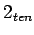
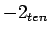

จงทำการแปลงค่าไบนารี่ขนาด 16 บิตของ  และ  ให้เป็นเลขไบนารี่ขนาด 32 บิต
เลขไบนารี่ขนาด 16 บิตของ มีค่าเท่ากับ
0000 0000 0000 0010
การแปลงค่าเลข 16 บิต ให้เป็น 32 บิต ทำโดยการคัดลอกค่า 0 ที่เป็น Most Significant Bit ของเลขไบนารี่ขนาด 16 บิตของ ไปยัง 16 บิตทางด้านซ้ายของเลขไบนารี่ 32 บิต จะได้
0000 0000 0000 0000 0000 0000 0000 0010
ที่มีค่าเท่ากับ
ในส่วนที่สองเริ่มจากการแปลงค่า ให้เป็น
0000 0000 0000 0010
ทำการ Invert บิต และบวก 1 จะได้
1111 1111 1111 1101 + 1 ___________________ = 1111 1111 1111 1110
การแปลงค่าเลข 16 บิต ให้เป็น 32 บิต ทำโดยการคัดลอกค่า 1 ที่เป็น Most Significant Bit ของเลขไบนารี่ขนาด 16 บิตของ ไปยัง 16 บิตทางด้านซ้ายของเลขไบนารี่ 32 บิต จะได้
1111 1111 1111 1111 1111 1111 1111 1110
ที่มีค่าเท่ากับ